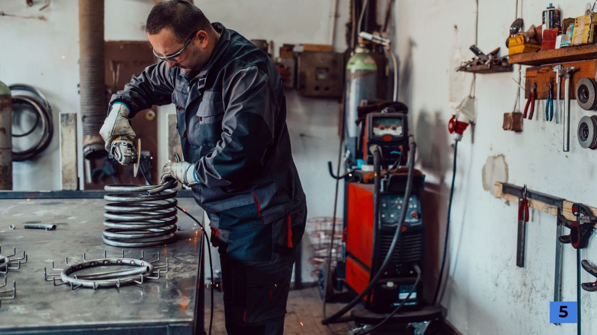

Notre Mission

Notre Mission : Votre Confort, Notre Engagement
Chez ETS CHAUD & FROID EQUATORIAL, notre mission est de vous offrir des solutions complètes et fiables dans les domaines du chauffage et de la climatisation. Nous croyons que chaque client mérite un environnement confortable, sûr et éco-responsable, quelle que soit la saison.
Pourquoi nous ?
Excellence technique : Nos experts qualifiés assurent des installations, des maintenances et des dépannages à la pointe de la technologie.
Engagement durable : Nous privilégions des solutions énergétiques efficaces pour réduire votre empreinte carbone tout en optimisant vos économies.
Proximité et écoute : Nous sommes à votre service pour comprendre vos besoins spécifiques et y répondre avec des solutions sur mesure.
Notre vision
Créer un monde où chaque foyer et entreprise dispose d'un climat adapté, tout en respectant l'environnement. Nous nous engageons à innover continuellement pour intégrer les meilleures pratiques et technologies du secteur.
"Faites confiance à des experts qui placent votre confort au cœur de leur mission"
Chez ETS CHAUD & FROID EQUATORIAL, notre engagement va bien au-delà de la simple prestation de services. Nous avons une mission claire : offrir à chaque client des solutions de chauffage et de climatisation adaptées, durables et performantes, tout en garantissant une satisfaction totale.
Nous croyons que chaque projet est unique. Que vous soyez un particulier, une entreprise ou une collectivité, nous analysons vos besoins avec soin pour vous proposer des installations et des interventions sur mesure. Notre objectif est de créer un environnement confortable, économe en énergie et respectueux de l’environnement, tout en vous assurant un service irréprochable.
Avec des années d’expérience dans le domaine, une équipe qualifiée et des équipements de pointe, nous avons bâti une réputation de fiabilité et d’excellence. Chaque intervention est réalisée avec rigueur et professionnalisme, car nous savons que votre confort et votre sérénité n’ont pas de prix.
Pourquoi nous faire confiance ? Parce que nous plaçons vos besoins au centre de nos priorités. Votre satisfaction est notre plus grande réussite.
N’attendez plus : contactez-nous dès aujourd’hui et découvrez comment nous pouvons transformer votre intérieur en un espace parfaitement équilibré, quelle que soit la saison. Avec ETS CHAUD & FROID EQUATORIAL, vous avez la garantie d’un partenaire de confiance à vos côtés.
Bienvenue chez ETS CHAUD & FROID EQUATORIAL, où l'excellence du service rencontre la rapidité d'exécution. Nous comprenons à quel point votre temps est précieux, et c'est pourquoi nous avons fait de la qualité et de l'efficacité les piliers de notre approche.
Dès votre premier contact avec nous, vous remarquerez la différence : une équipe à l’écoute, prête à comprendre vos besoins et à vous proposer des solutions adaptées. Nous savons que chaque projet est unique, et c'est avec un souci du détail inégalé que nous élaborons des plans sur-mesure, conçus pour répondre précisément à vos attentes.
Mais ce n'est pas tout. Nous savons également que la rapidité est essentielle. Grâce à des processus optimisés et une équipe réactive, nous nous engageons à respecter vos délais, sans jamais compromettre la qualité de notre travail. Chaque étape, de la conception à l'exécution, est réalisée avec une précision et une efficacité qui nous distinguent.
Notre objectif est simple : vous offrir un service qui dépasse vos attentes. Nous combinons des technologies modernes, des techniques éprouvées et une expertise approfondie pour garantir des résultats impeccables, à la hauteur de vos exigences.
Faites-nous confiance pour transformer vos projets en réussites concrètes, grâce à une équipe dédiée qui place votre satisfaction au cœur de ses priorités. Avec ETS CHAUD & FROID EQUATORIAL, vous avez l'assurance d'un service rapide, fiable et de qualité supérieure, où chaque détail est pris en compte pour répondre à vos besoins dans les moindres délais.
Choisir ETS CHAUD & FROID EQUATORIAL, c'est choisir un partenaire de confiance qui allie professionnalisme, engagement et performance. Contactez-nous dès aujourd'hui et découvrez la différence d’un service pensé pour vous !

Services de qualité
Chez nous, la qualité du service n'est pas une promesse, c'est un engagement. Chaque projet est traité avec le plus grand soin, en mettant l'accent sur l'écoute, la précision et la satisfaction totale de nos clients. Notre équipe d'experts qualifiés est dédiée à fournir des solutions sur-mesure, en respectant les normes les plus strictes et vos attentes les plus exigeantes. Faites-nous confiance pour un service irréprochable, où chaque détail compte et où votre satisfaction est notre priorité absolue.